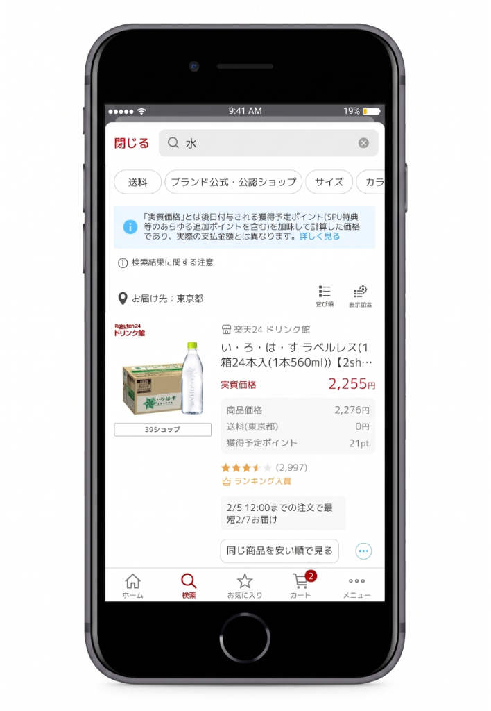
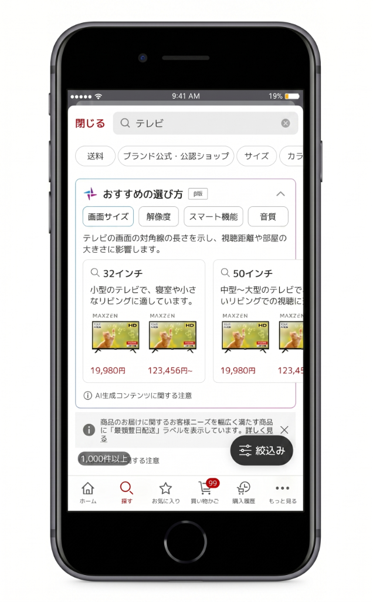
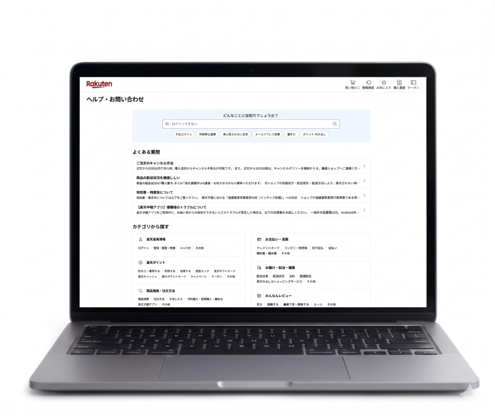

UX Director
& Researcher
UXリサーチによってインサイトを抽出し、プロダクト改善に活かすUXデザイナー。楽天市場での検索UX改善担当・FAQ全面リニューアルをはじめ、大手ECから金融・不動産まで幅広いドメインでのリサーチ・設計を経験。
Rio AI Assistant
経歴・リサーチ手法・得意領域など、AIが代わりにお答えします。
EXPERIENCE
2023–現在
楽天グループ株式会社
UXディレクター · 市場編成UXグループ
2020–2023
株式会社ニジボックス
UXリサーチャー · クライアントソリューション部
2017–2019
株式会社シイエヌエス
データアナリスト · ビッグデータ戦略事業部
PROJECTS
楽天グループ株式会社

2024
楽天市場：ポイントを加味した価格比較機能のUI改善
認知的ウォークスルー×定量分析でUIUX課題を特定し、ボトムアップ起案。3年間で1億円規模のRevenueリフトを試算。

2025–2026
楽天市場：AI商品選択ガイド機能の受容性検証
新機能提案から60名の会場調査・ABテストを主導。失敗を次の設計方針に転換できるインサイトを獲得。

2023–2024
楽天市場：カスタマーサポートFAQの全面リニューアル
サイト構造設計から全画面ディレクションまで主担当。リニューアル後2週間で回答率+1pt。
株式会社ニジボックス
2021–2022
新規事業：中古マンションリノベーションUXリサーチ
新規事業のターゲットユーザー像を特定
2020–2022
銀行アプリ：リリース前ユーザビリティテスト
半年ごと3回・計30名以上のテストを実施。継続的な改善を主導し、社内の準MVPを受賞。
2022–2023
グローバルUXチームでの常駐型支援
UXデザイナーとして1年以上常駐。全てのNPS調査で満点評価を継続。
楽天グループ · 2023–現在
チーム・組織への貢献
プロジェクト成果に加え、組織のリサーチケイパビリティ向上と、チームを超えた基盤づくりにも取り組んでいます。
Research Evangelist
20名規模のUXチームのリサーチ教育・品質管理を担当。レビュー・テンプレート整備・OJTを通じてリサーチプロセスを組織全体に標準化。
UXライティングガイドライン策定
属人化していたテキスト判断基準を体系化し、2026年1月に策定。楽天市場全体で一貫したユーザーコミュニケーション基盤を構築。
KPI体系の再設計とロードマップ策定
検索画面KPIの分解・整理・モニタリング設計を主導。定量的な改善の優先順位付けができる体系と、プロダクト改善ロードマップを策定。
RESEARCH OUTPUTS
最も使いやすい検索Filter UIは？
「同じ商品が並ぶ」ペインの構造化と解決策の検証
検索AIガイド機能：CLT調査から導く「使われない理由」と改善方針
SKILLS
リサーチ設計・実査
インタビュー / デプスインタビュー
ユーザビリティテスト（CLT・リモート）
アンケート設計・分析
認知的ウォークスルー
カードソーティング
ペルソナ / CJM 作成
インサイト抽出・言語化
リサーチレビュー・指導
UXデザイン・情報設計
情報アーキテクチャ（IA設計）
ワイヤーフレーム
Figma / プロトタイプ作成
UXライティング
デザインディレクション
データ分析・プロダクト推進
SQL（BigQuery, Redshift）
Adobe Analytics / Tableau
KPI設計・ABテスト設計
ボトムアップ起案
仕様書作成・要件定義
エンジニア / PDM 協業
RESEARCH OUTPUTS
スライド形式のリサーチアウトプットサンプルです。実際の調査で作成したレポートの構成・内容を再現しています。